第三章：上位机基本功能介绍
提示
本章内容较多，可以选择性观看，建议先看第四章：创建工程
双击桌面上的USART HMI图标即可打开上位机
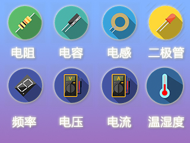小技巧
首次打开时会弹出更新说明，可以点击左下角的下次不再提醒，永久关闭更新说明提醒框
可以通过主界面上的提示来知道当前是否为最新版本，建议所有用户都更新到最新版本

提示
USART HMI软件为淘晶驰智能串口屏集成开发环境。该集成开发环境包含串口屏界面设计，调试等界面开发软件的所有功能。下方截图使用的工程可以从淘晶驰资料中心-7.工程样例-1.标准出厂工程样例-X5系列出厂样例中找到

集成开发环境大致分为几大功能区，如下图所示。
1.菜单栏
1.1文件菜单
1.1.1输出生产文件
该菜单用于输出编译生成的.tft类型文件。.tft文件用于做TF卡升级或外部设备串口升级使用。

1.1.1.1生产输出的.tft文件，与项目工程文件同名。
1.1.1.2在弹出的《输出生产文件》窗口窗口中，我们可以选择一个指定的目录用于存放输出的.tft文件。
1.1.1.3选择《输出》按钮。将对项目进行编译后，生成新的.tft文件。并打开《输出文件夹》。
注意
如果《输出文件夹》已经存在同名的.tft文件，新生成的文件会覆盖旧文件。
注意
如果项目编译失败，将不会打开《输出文件夹》。请留意输出窗口的错误提示。
1.1.1.3《仅打开输出文件夹》。不编译当前项目工程，直接打开《输出文件夹》。
小技巧
技巧：如果仅仅是想打开上次编译生成的文件，可以执行该操作。
1.1.2打开
打开一个.HMI工程文件。
1.1.3新建
新建一个.HMI工程文件。
- 1.1.4保存
保存当前正在编辑的工程文件。
- 1.1.5另存为
将当前编辑的工程文件，另存为一个副本。
- 1.1.6版本备份目录
打开backup文件夹。 backup文件夹下保存的工程文件为使用新版本USART HMI软件第一次打开旧版本工程文件之前自动备份的工程文件。
- 1.1.7虚拟eeprom文件夹
打开eeprom文件夹。eeprom文件夹保存的文件是USART HMI软件在模拟运行工程中生成的虚拟eeprom文件。
- 1.1.8虚拟SD卡文件夹
打开虚拟SD卡文件夹。虚拟SD卡文件夹保存的文件是USART HMI软件在模拟运行工程中使用到SD卡内的文件。
- 1.1.10导入工程
将会导入另一个工程的所有页面。
- 1.1.10关闭工程
关闭当前正在编辑的工程文件。
- 1.1.11退出
退出USART HMI集成开发环境。
1.2工具菜单

- 1.2.1字库制作
《字库制作》工具是USART HMI开发环境使用的专用字库制作工具。
- 1.2.2动画制作(GmovMaker)
《动画制作》工具是USART HMI开发环境使用的专用动画制作工具。
- 1.2.3视频/音频转换(VideoBox)
《视频/音频转换》工具是USART HMI开发环境使用的专用视频/音频制作工具。
- 1.2.4图片转换
《图片转换》工具是USART HMI开发环境使用的用于外部图片控件的工具
1.3设置菜单
- 1.3.1软件设置
在该选项打开的窗口中，可以根据个人喜好对开发环境的各种参数进行配置。
- 1.3.2重置窗口布局
将开发环境的各项配置参数，窗口布局恢复到默认状态。
1.4帮助菜单
- 1.4.1指令集
该菜单可以打开一个本地文档，该文档包含串口屏的关键文档描述。方便无法连接互联网的客户查阅资料。
注意
强烈建议客户使用在线版本资料中心的资料。因为离线版本并没有包含本资料中心的所有资源文档，同时可能由于资料更新不及时出现部分功能描述与软件功能不一致。
- 1.4.2 USART HMI 资料中心
该菜单会链接到在线网页版本的USART HMI 资料中心。
1.5关于菜单

- 1.5.1关于USART HMI
该菜单用于查看软件版本信息。
- 1.5.2检测版本更新
该菜单用于连接服务器，检测软件是否有新版本。
- 1.5.3最新信息
该菜单用于介绍软件各个版本的升级新功能信息。
2.工具栏
2.1 文件操作快捷菜单。
如下图所示，快捷操作功能同文件操作菜单。
2.2项目操作菜单
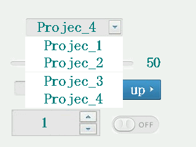- 2.2.1 编译
对当前的工程文件进行编译操作。并将结果显示在输出窗口中。
- 2.2.2 调试
对编译成功的项目进行模拟运行操作。该功能可以不需要借助实物串口屏快速的验证项目工程的功能是否符合预期需求。具体调试操作请参考调试窗口。
- 2.2.3 下载
将编译生成的.tft文件下载到实物串口屏中
2.3控件编辑菜单

- 2.3.1 控件复制
对界面编辑区中处于选中状态的按钮复制到粘帖板中。也可以使用Crtl+C快捷键执行相同操作。
- 2.3.2 控件剪切
对界面编辑区中处于选中状态的按钮剪切到粘帖板中。也可以使用Crtl+X快捷键执行相同操作。
- 2.3.3 控件粘帖
将剪切板中的控件粘帖到界面编辑区。也可以使用Crtl+V快捷键执行相同操作。
- 2.3.4 控件锁定/解锁
选择控件以后，通过点击锁定/解锁按纽来实现控件的锁定/解锁功能。控件被锁定以后，将再控件的右上角显示一个《锁》图标。 被锁定的控件，不能通过鼠标拖动控件修改控件位置，和鼠标拖动修改控件的大小。但是仍然可以选中控件后通过修改属性区域的x，y，w，h属性来调整控件的位置和大小。该功能能有效防止防止因误操作修改了已经布局好的界面。
- 2.3.5 控件删除
对界面编辑区中处于选中状态的控件执行删除操作。
- 2.3.5 控件撤销/恢复
撤销/恢复上一次在界面编辑区的操作。

- 2.3.6 设备按钮
打开设备选择窗口。可以配置产品系列，型号以及屏幕显示方向等。具体请参考本章节 13.设备窗口章节。
- 2.3.7 ID按钮
点击该按钮，可以切换显示/不显示界面区域控件名称。
- 2.3.8 缩放比例
可以对界面区域的界面编辑内容进行放大/缩小调节。范围为10%-600%。方便界面布局的时候，精确摆放控件的位置和调节控件的大小。
小技巧
可以点击当前的百分比数值，快速将显示比例调整为默认的100%。
- 2.3.8 控件图层调节
图层调节，主要用于在多个控件存在重叠区域时的现实层级关系。一个页面上的所有控件都拥有不同的图层，可以通过图层调节按钮来调节控件的图层关系。

该按钮 ↑ 用于将控件置于所有控件最顶层。
该按钮 ↓ 用于将控件置于所有控件最顶层。
注意
T0，K0系列串口屏，只有在页面初始化的时候，具体图层功能。再触摸屏运行过程中，低层级的控件刷新后，将被置于顶层。X系列串口屏具有图层保持功能，在运行过程中能一直保持图层级别。
注意
使用图层调节按钮，调节控件的图层优先级功能会导致控件ID号变化，如果需要用到名称组等功能，需要特别小心！
2.3.9 控件布局
如图所示,可以使用工具栏中的快捷操作对同时选中的多个控件进行对边沿齐、中心对齐、控件大小相等、等间距、间距放大、间距缩小布局操作。
3.工具箱
工具箱窗口中列有串口屏支持的所有控件列表。用户需要使用各种控件是直接将对应的控件拖放放界面编辑区域。各个控件的详细使用方法请参考控件详解章节。
4.资源文件窗口

资源文件窗口存放工程所调用到资源。其中动画，音频仅x系列支持，视频仅x5系列支持。
4.1 图片资源 图片资源：t0 t1系列支持jpg bmp； k0系列支持jpg bmp；x系列支持jpg png gif bmp；
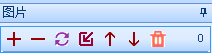如图所示,可以使用相关按钮进行图片添加，删除，替换，插入，上移，下移，全删。
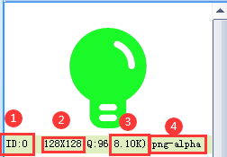- 4.1.1.图片id
控件背景调用图片使用到的id。
- 4.1.2.图片分辨率
导入图片分辨率超出屏幕显示支持最大分辨率将会报错。
- 4.1.3.图片压缩质量
压缩质量越大，图片显示效果越好，但是占用的空间会更大
- 4.1.4.图片大小
x5,x3,t1系列支持图片压缩储存，k0,t0系列不支持图片压缩储存（储存图片最小为分辨率：长*宽*2 bit）。
- 4.1.5.图片格式
导入图片的图片格式。
▶4.2 字库资源
小技巧
字库：可以通过工具菜单中的《字库制作》工具制作
如图所示,可以使用相关按钮进行字库添加，删除，替换，插入，上移，下移，全删。

- 4.2.1.字库id
控件字库调用字库使用到的id。
- 4.2.2.字库名称
生成字库的时候进行命名。
- 4.2.3.字体大小
该字库的字体大小。
- 4.2.4.字体字符编码
该字库使用的字符编码。
- 4.2.5.字符数量
字库所包含的字符数量。
- 4.2.6.flash空间
字库所占flash空间大小。
4.3 动画资源 动画：可以通过工具菜单中的动画制作

如图所示,可以使用相关按钮进行动画添加，删除，替换，插入，上移，下移，全删。

4.3.1.动画id，动画控件调用动画使用到的id。
4.3.2.动画分辨率，导入动画分辨率超出屏幕显示支持最大分辨率将会报错。
4.3.3.动画时长。
4.3.4.动画压缩质量。
4.3.5.动画帧数。
4.3.6.动画所占flash空间大小。
4.4 视频资源
小技巧
视频：可以通过工具菜单中的视频/音频转换

如图所示,可以使用相关按钮进行视频添加，删除，替换，插入，上移，下移，全删。

4.4.1.视频id，视频控件调用视频使用到的id。
4.4.2.视频分辨率，导入动画分辨率超出屏幕显示支持最大分辨率将会报错。
4.4.3.视频时长。
4.4.4.视频fps。
4.4.5.视频所占flash空间大小。
4.5 音频资源
小技巧
音频：可以通过工具菜单中的《视频/音频》转换

如图所示,可以使用相关按钮进行音频添加，删除，替换，插入，上移，下移，全删。

4.5.1.音频id，音频控件调用音频使用到的id。
4.5.2.音频名称，生成音频的时候进行命名。
4.5.3.音频采样率
4.5.4.音频时长。
4.5.5.音频所占flash空间大小。
注意
音频格式必须用上位机自带的《视频/音频转换》转换为wav格式。
5.界面
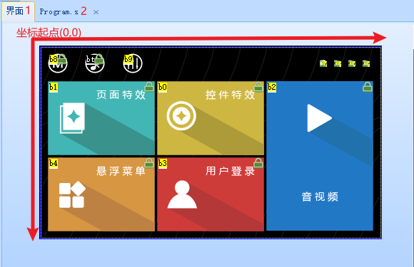5.1 界面窗口 界面窗口是UI编辑的主要工作区域，该区域可以被分为两部分。如上图所示，中间一个与当前闲着设备型号分辨率相同的区域为设备运行的可显示区域，超出该范围的为设备运行不可显示区域。t0.t1.k0控件只能放在可显示区域，设置非显示区域软件编译会报错。x系列x，y属性可以超出屏幕坐标范围(-6000~+6000)，但是超出屏幕将被裁减，不会显示出来。 可显示区域，以左上角作为坐标原点。分别向右（X轴）和向下（Y轴）增长，增长步进为1像素点。
5.2 program.s窗口

program.s窗口用于自定义全局变量和上电初始化数据如（bkcmd指令，bands指令）
注意
代码不要写page指令后面，page指令后面的程序是不执行的。
6.特殊控件窗口
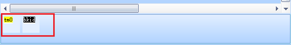特殊控件窗口位于界面窗口的下方。用于显示当前页面的变量控件、定时器控件等无法在界面区域显示的特殊控件。 如果当前页面没有该类无法在界面显示的特殊控件，该窗口可能会被开发环境自动隐藏。
7.输出窗口
输出窗口主要用于输出编译结果信息。
如果项目正常编译成功，窗口中会列出项目工程的各类资源占用详细信息。
如果项目编译失败，窗口中会列出错误信息。如果是事件代码错误，可以双击错误信息可以定位到错误代码位置。如果是提示字库ID无效，图片ID无效等资源文件错误，请按照提示查找缺少的资源项目，添加对应的资源文件或者修改控件属性不使用该资源。
8.事件编辑窗口
 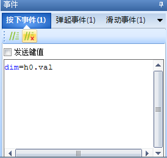
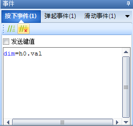
如上图所示，串口屏有多种触发事件，每种事件都可以根据情况编写不同的代码。可以根据实际功能需求选择对应的事件类型。
8.1页面事件详解
- 8.1.1 前初始化事件
每次在执行page命令时，在执行页面刷新操作以前，串口屏会自动执行一次《前初始化事件中》的代码。
- 8.1.2 后初始化事件
每次在执行page命令时，在页面刷新操作完成以后，串口屏会自动执行一次《后初始化事件》中的代码。
- 8.1.3 页面按下事件
显示区域内且没有控件的区域，触摸被按下的瞬间，串口屏会自动执行一次页面的《按下事件》中的代码。
- 8.1.4 页面弹起事件
显示区域内且没有控件的区域（以触摸按下是的坐标为准），触摸按下以后松开触摸的的瞬间，串口屏会自动执行一次页面的《弹起事件》中的代码。
- 8.1.5 页面离开事件
每次在执行page切换新的页面前，串口屏会自动执行一次当前页面的《页面离开事件》中的代码。
8.2 控件事件详解
- 8.2.1 控件按下事件
在控件的显示区域内，触摸被按下的瞬间，串口屏在执行完成控件按下状态刷新完成以后，串口屏会自动执行一次控件的《按下事件》中的代码。
- 8.2.2 控件弹起事件
在控件的显示区域内（以触摸按下时的坐标为准），触摸按下以后松开触摸的的瞬间，串口屏在执行完成控件弹起状态刷新完成以后，串口屏会自动执行一次控件的《弹起事件》中的代码。
- 8.2.3 控件滑动事件
在控件的显示区域内（以触摸按下时的坐标为准），触摸按下以后且没有松开的过程中，每次触摸坐标发送改变后，串口屏会自动执行一次控件的《滑动事件》中的代码。
- 8.2.4定时事件
定时器控件特有事件 定时器设定时间到了以后，串口屏会自动执行一次定时器的《定时事件》中的代码。
- 8.2.5播放完成事件
音频控件/视频控件特有控件 视频/动画控件播放完成一次视频文件/动画文件以后，串口屏会自动执行一次控件的《播放完成事件》中的代码。
- 8.2.6发送键值
每个控件按下事件/弹起事件下面都会有发送键值这个选项，如果勾选该选项，点击控件将会串口发送相应的数据，可方便客户设备快速定位是哪个页面中控件发生点击事件，当然客户也可以通过printh加上prints指令来自定义串口发送格式。
发送键值串口发送格式为：
65 pageid obj state ff ff ff
pageid ： 页面id obj ： 控件id state ： 按下或弹起（1或0） 实例1： 65 05 03 01 ff ff ff 页面5 id为3的控件发生按下事件 实例2： 65 07 1c 00 ff ff ff 页面7 id为28的控件发生弹起事件
注意
所以发送数据都是16进制。
9.页面窗口
9.1页面id page指令、dp指令将会用到页面id。
9.2锁 显示页面是否上锁了，如果上锁使用鼠标右键就能解锁了。
9.3页面名称 每个页面的页面名称。跨页面操作控件属性将会用到页面名称，页面名称将和页面控件同一个名称。
10.属性窗口
每一个控件都会有属于它的属性。可以修改控件属性，可以改变控件的外形，位置，功能等属性。点击每一个属性，可以在属性栏的最下方看到对应的注释
11.调试窗口
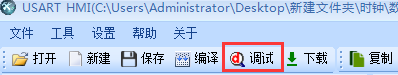点击软件工具栏中的调试将进入调试窗口

11.1操作菜单
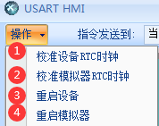- 11.1.1校准设备RTC时钟
对电脑正在联机的屏幕中rtc时钟进行校准。（仅k0，x5支持rtc）
注意
使用到屏幕中rtc必须装电池，否则重新上电rtc值为随机值。电池型号为cr1220 3v。
- 11.1.2校准模拟器rtc时钟
对模拟器中rtc时钟进行校准。
- 11.1.3重启设备
重新启动和电脑联机的屏幕。
- 11.1.4重启模拟器
重新启动模拟器。
11.2与串口屏联机进行调试

软件支持3种调试方式
11.2.1当前模拟器

将软件做好的工程在调试界面进行模拟仿真。选择当前模拟器，指令输入区输入指令控制的是模拟器。
11.2.2本机串口

将软件做好的工程在调试界面进行模拟仿真。选择本机串口，点击联机按钮，联机成功后，设备状态会出现联机设备型号等设备信息，调试输入区输入指令控制的是设备。
11.2.3模拟器和串口

将软件做好的工程在调试界面进行模拟仿真。选择模拟器和串口，点击联机按钮，联机成功后，设备状态会出现联机设备型号等设备信息，调试输入区输入指令控制的是设备和模拟器。能调试看到模拟效果和实际仿真，方便查找问题。
11.3模拟器状态
显示模拟器当前背光亮度，可通过dim，dims指令修改。屏幕是否处于睡眠中，通过sleep指令直接修改，ussp指令，thsp指令间接修改。
11.4指令编码
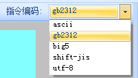指令输入区发送指令是用什么字符编码发送的。
注意
字符编码不一致时会出现乱码
11.5模拟器显示区域
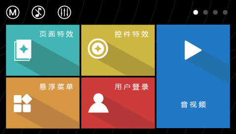模拟工程运行，运行显示界面，鼠标可以模拟触摸。鼠标左键点击触发按下事件，松开左键触发弹起事件。
11.6指令发送格式
- 11.6.1.string
选择string发送，指令以字符串形式发送。输入指令后将会默认在后面加上3个16进制ff。
- 11.6.2.hex
选择hex发送，指令以16进制形式发送。
11.7指令存储
点击1,2,3,4按钮指令输入区将出现保存在里面指令代码。点S是将指令输入区中指令代码保存到1到4按钮中。方便重复的指令调试。
11.8指令输入区
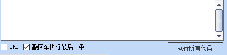在区域里输入指令，通过执行所有指令按钮，指令成功执行，模拟器显示区域（或串口设备）将会执行相应的操作。
- 11.8.1.crc
发送的字符串指令将主动加上crc校验再发送到模拟器（或串口设备）。默认关闭。
- 11.8.2.敲回车执行最后一条
开启后，敲键盘回车能够执行指令输入区的代码；关闭后，敲键盘回车不能够执行指令输入区的代码。默认开启。
注意
开启或关闭，都需要重新鼠标点击指令输入区；否则不生效。
11.9模拟器返回数据窗口
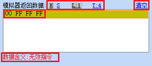当模拟界面工程串口发送数据出去的时候，串口发送的数据就会显示在这个窗口。
指令执行失败，将会在模拟器返回数据窗口返回失败原因（可通过bkcmd指令开启或关闭）。
- 11.9.1 H 显示
发送数据以16进制显示
- 11.9.2 S 显示
发送数据以字符串显示
- 11.9.3 L 显示
串口发送数据以行的形式显示。同一个控件同一个事件下串口发送的数据算一行。
- 11.9.4 T 显示
串口发送数据以发送数据先后显示，不分行。并以16进制数据显示。
- 11.9.5 清空
清空模拟器返回数据窗口里的所有数据
- 11.9.6串口设备返回数据窗口
当串口设备串口发送数据到模拟器，模拟器会将接收到的数据显示在这个窗口。
- 11.10.1 H 显示
模拟器接收到数据以16进制显示
- 11.10.2 S 显示
模拟器接收到数据以字符串显示
- 11.10.3 L 显示
模拟器接收到数据数据以行的形式显示。同一个控件同一个事件下串口屏发送的数据算一行。mcu每条指令加上3个16进制结束符算一行。
- 11.10.4 T 显示
模拟器接收到数据数据以接收数据先后显示，不分行。并以16进制数据显示。
11.11模拟器和mcu单片机联机调试

- 将软件做好的工程在调试界面进行模拟仿真。
①指令发送到选择当前模拟器 ②下面选择用户mcu输入 ③选择好串口号，波特率，点击开始。 联机成功后，就可以mcu和模拟器进行调试。
11.12设备状态

指令发送到选择本机串口（模拟器和串口），开始联机，联机成功后会出现如上图所示的内容。
11.13曲线数据发生器

仿真曲线/波形控件每添加一个点会形成的波形，方便用户调试出自己想要波形图。获取它的数据点以及时间间隔。
12.下载窗口
点击工具栏上的下载按钮，编译无误后会出现下载窗口

- 12.1 串口号
设备和电脑连接串口号，可手动选择，可自动搜索。
- 12.2 下载使用的波特率
串口下载工程速率，范围在2400~921600。设置高的下载波特率可减少下载时间。
注意
设备波特率和下载使用的波特率无关。
注意
若usb转ttl芯片不支持过高下载波特率，会出现联机失败。
- 12.3 文件大小和下载时间
整个工程文件大小，以及工程下载到屏预计时间，下载时间和所使用的下载波特率有关。
- 12.4 下载和退出
工程通过串口下载到屏，若工程和设备固件版本不一致，会自动升级为当前工程固件版本。
13.设备窗口

设备窗口在工具栏中“设备”按钮，点击就可以进入到设备窗口。
13.1 工程设备型号
设备窗口

- 13.1.1 产品系列
软件会根据推出产品系列实时更新目前拥有的产品系列，选择产品型号，下方会出现具体的产品型号。
- 13.1.2 产品型号
选择产品系列会在该窗口出现工程具体型号（产品型号命名）。选择工程具体型号，点击ok。软件会根据型号自动生成工程窗口。
注意
下载工程进屏，如果工程型号和屏型号不匹配会出现model does not match。
13.1.3 显示窗口

- 13.1.4显示方向
屏幕支持0 90 180 270四个显示方向。
注意
工程不支持运行中改变显示方向。
- 13.2.5 字符编码
工程字符编码，目前支持：ascii，gb2312，big5，shift-jis，utf-8。
注意
字符编码不一致时会出现乱码。
13.2.6 工程窗口

- 13.3.7 工程密码
设置打开工程是否需要密码，默认是没有密码的（设置密码后如果忘记密码，工程将无法找回，请慎用）。
- 13.3.8 tft文件烧录
仅x系列支持 设置sd卡里tft文件是否烧录后修改文件名，用于一次性烧录工程到屏上。
- 13.3.9 内存文件存储区
如果需要使用ram，在这设置为至少大于65kB=65560Byte。